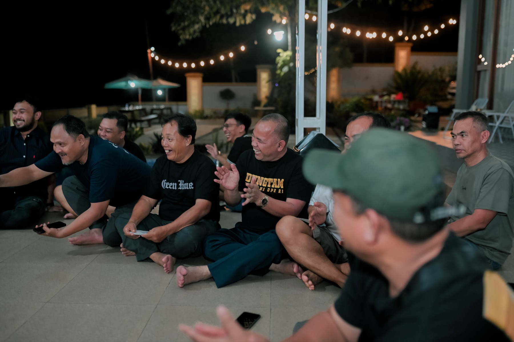
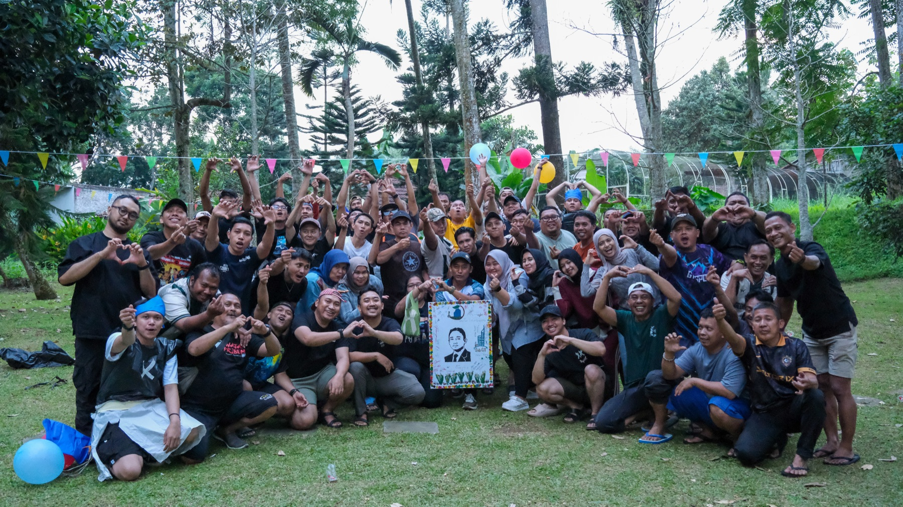

Collect
Find the stories, artifacts, and voices that shaped the company.
Company Anniversary Legacy · Next chapter
A milestone celebration with enough history to feel meaningful and enough momentum to avoid becoming a museum.
Mark the milestone ↗
THENWe surface the people, turning points, and cultural details that make the journey yours, then use them to open the next chapter.
Find the stories, artifacts, and voices that shaped the company.
Build a narrative that is honest, warm, and recognizably yours.
Give the milestone scale through performance, recognition, and surprise.
Close by pointing the collective energy toward the future.

THE OUTCOME / PRIDE · RECOGNITION · RENEWAL